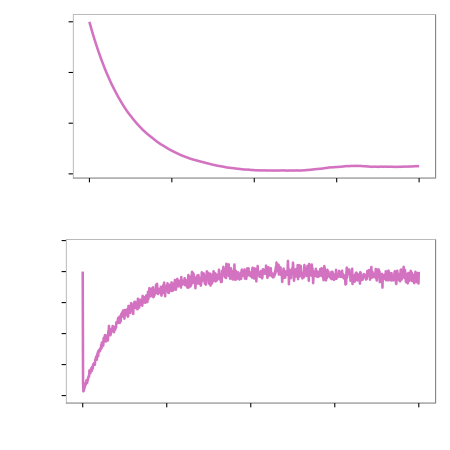
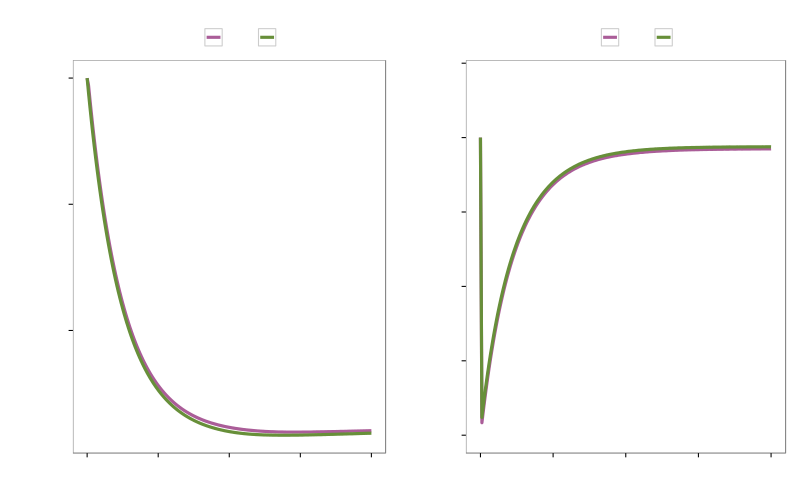
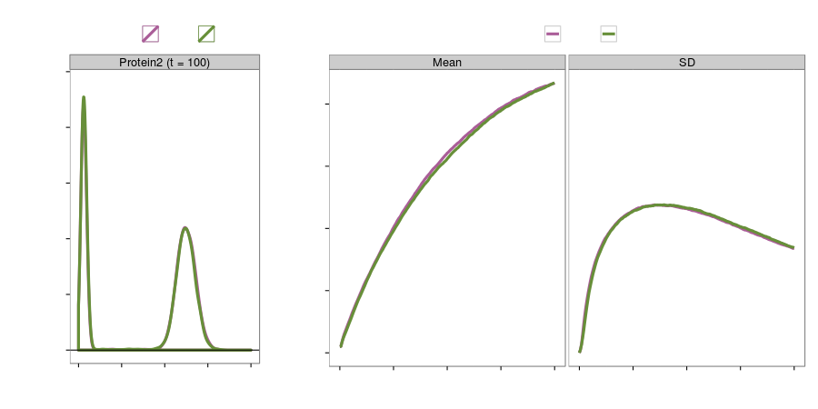
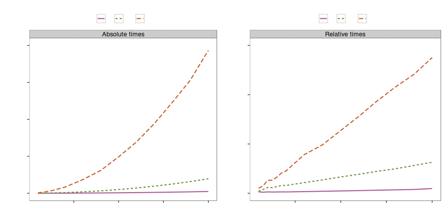

ES31: Stochastic systems biology
- Colin Gillespie
- Stochastic simulation of chemically reacting systems using multi-core CPUs
- Chris Barnes
- A method for exploring the structural robustness of stochastic biological networks
- Heniz Koeppl
- Statistical inference of cellular behavior from heterogeneous single-cell data
- Theo Kypraios
- Fast approximate Bayesian computation for discretely observed Markov models using a factorised posterior distribution
- Chris Sherlock
- The delayed-acceptance particle marginal random walk Metropolis
Stochastic simulation of chemically reacting systems using multi-core CPUs
http://github.com/csgillespie/talks/

Overview
- Stochastic kinetic models
- Issues with the Direct method
- Multi-core method
- Species update
- Time steps
- Examples
- Future directions
Stochastic kinetic models
- A biochemical network is represented as a set of pseudo-biochemical reactions ($u$ species & $v$ reactions) $$ R_i: p_{11}\mathcal{X}_1+\cdots+p_{1u}\mathcal{X}_u \xrightarrow{c_i} q_{11}\mathcal{X}_1+\cdots+q_{1u}\mathcal{X}_u $$
- Stochastic rate constant $c_i$
- Hazard/instantaneous rate: $h_i(X_t, c_i)$ where $X_t$ is the current state of the system
Stochastic kinetic models
- Describe the SKM by a Markov jump process (MJP)
- The effect of reaction $R_k$ is to change the value of each species $X_i$ by $q_{ji} - p_{ji}$
- The stoichiometry matrix $S$ has elements $s_{ij} = q_{ji} - p_{ji}$
- It can be shown that the time to the next reaction is $$ t \sim Exp(h_0 (X_t , c)) \quad\text{where}\quad h_0(X_t , c) =\sum_{i=1}^v h_i(X_i, c_i) $$ and the reaction is of type $i$ with probability $h_i(X_t, c_i)/h_0(X_t , c)$
- The process is easily simulated using the direct method (Gillespie algorithm)
The direct method
- Initialisation
- Propensities update: Update each of the $v$ hazard functions, $h_i(x)$
- Propensities total: Calculate the total hazard $h_0 = \sum_{i=1}^v h_i(x)$
- Reaction time: $\tau = -\ln[U(0,1)]/h_0$ and $t = t+ \tau$
- Reaction selection: A reaction is chosen proportional to its hazard
- Reaction execution: Update species
- Iteration: If the simulation time is exceeded stop, otherwise go back to step 2
Typically the number of iterates is very large
Approximations
Relax assumptions to make simulation faster and scalable
- Ordinary differential equations (ODE)
- Linear noise approximation (LNA) and moment closure (2MA)
- Diffusion approximation and chemical Langevin equation
- Hybrid discrete-continuous models
- Split models into smaller sub-models based on fast and slow reactions
Can't easily utilise multi-core CPUs
MIDIA algorithm (Bowsher, 2011)
- KIG construction: construct a kinetic independence graph
- Graph nodes are biochemical species
- Clique/sub-model modularisation: partition the model $M$ into its basic
cliques/sub-models
- Typically cliques are too small of simulation purposes
- Clique aggregation: on the junction tree, perform pairwise aggregation of selected modules
Example: Chaperone heat shock model
- Interplay between damaged proteins and available free chaperones
- Affect on cellular ageing
- Fifteen species
- Twenty-three reactions
- Key species: $\mathtt{Hsp90}$ and $\mathtt{ADP}$
Heat shock model

Sub-models
- Three sub-models:
- $\mathcal{M_1}:$ 7 species & 9 reactions
- $\mathcal{M_2}:$ 6 species & 7 reactions
- $\mathcal{M_3}:$ 5 species & 7 reactions
- Separator species ($\mathcal{S}$):
- $\mathtt{Hsp90}:$ $\mathcal{M_1}$ & $\mathcal{M_2}$
- $\mathtt{MisP}:$ $\mathcal{M_2}$ & $\mathcal{M_3}$
- $\mathtt{NatP}:$ $\mathcal{M_2}$ & $\mathcal{M_3}$
Exact parallel scheme
- Initialise
- while $t \le \mathtt{maxtime} $
- $\quad$ ## Parallel step
- $\quad$ for each sub-model $\mathcal{M}_i$
- $\qquad$ Simulate $\mathcal{M}_i$ until $\mathcal{S}$ changes
- $\quad$ end for
- $\quad$ Rewind sub-models to time of first $\mathcal{S}$ change
- $\quad$ Propagate changes to the other sub-models
- end while
Exact parallel scheme
Only suitable if the separator species changes infrequently
- All threads must be synchronised, then each sub-model rewound
- Storage issues
- The change in the separator species must be propagated throughout the sub-models
- The threads must then be restarted
Approximate parallel scheme
- Initialise
- while $t < \mathtt{maxtime}$
- $\quad$ Calculate $\triangle t$
- $\quad$ for each sub-model $\mathcal{M}_i$
- $\qquad$ # Using SSA, or a hybrid simulator, or a SDE
- $\qquad$ Simulate for $\triangle t$
- $\quad$ end for
- $\quad$ Combine separator species
- $\quad$ Propagate changes to the sub-models
- $\quad$ Update global time: $t := t + \triangle t$
- end while
Combining separator species
Averaging the separator species, $\mathcal{S}$, across models is a bad idea
For example, $\mathtt{Hsp90}$
- is approximately constant in $\mathcal{M}_1$
- is rapidly changing $\mathcal{M}_2$
Combining separator species
- Calculate the change in separator species:
$$
\mathcal{S}_{i,j}(t + \triangle t) = \mathcal{S}_{i,j}(t) + \sum_{k \in m_i}[
\mathcal{S}_{i,k}(t+\triangle t) -
\mathcal{S}_{i,k}(t)]
$$
where
- $\mathcal{S}_{i,j}(\tau)$ is the population of the separator species $i$, at time $\tau$, in sub-model $\mathcal{M}_j$
- $m_i$ are sub-models that contain a particular separator species
- This step synchronises species, so \[ \mathcal{S}_{i,j}(t) = \mathcal{S}_{i,k}(t) \] and \[ \mathcal{S}_{i,j}(t + \triangle t) = \mathcal{S}_{i,k}(t + \triangle t) \]
Time step $\triangle t$
- Choosing $\triangle t$ is a
compromise
- Too large would induce error
- Too small would be slow
- Intuitively $\mathcal{S}$ shouldn't change much during $(t, t+\triangle t)$
- Suppose a step of $\triangle t$ results in state change $\lambda$
- Then we want $$ \vert h_j(\mathbf{x} + \mathbf{\lambda} )- h_j(\mathbf{x}) \vert $$ to be small, i.e. a small change in hazards
- This is similar to the $\tau$-leap algorithm
Adaptive time step (intuition)
For sub-model $\mathcal{M}_k$,
$$
\triangle t_k
= \min_{i \in K_{sp}} \left\{ \frac{\max(\epsilon x_i/g_i(\mathbf{x}),
1)}{|\mu_j|}, \frac{\max(\epsilon x_i/g_i(\mathbf{x}),
1)^2}{|\sigma_i^2|}\right\} \;.
$$
- $g_i(\cdot)$ adjusts for higher-order reactions
- $\epsilon$ is the tuning parameter
- $\mu_j$ mean hazard level
- $\sigma_j$ hazard variance
The overall timestep is
$$ \triangle t = \min(\triangle_1,\triangle t_2, \ldots, \triangle t_m) $$
Results (Heat shock)
Speed up of around 2.5
Gene regulation network
- Large model, that contains $k+1$ sub-models
- In sub-model $\mathcal{M}_k$, we have, inter alia,
- $\mathtt{Gene}_k$, $\mathtt{Protein}_k$, $\mathtt{mRNA}_k$
- When $\mathtt{Protein}_1$ binds to $\mathtt{Gene}_k$, the production of $\mathtt{Protein}_k$ changes
$k=6$ sub-models
Gene regulation network (accuracy)
Gene regulation network (speed)
30 fold speed-up on a four core CPU!
Summary
- Many stochastic simulation algorithms are inherently serial
- First attempt at using multiple CPUs to speed up a single stochastic simulation
- For very large models it could be possible to use GPUs
- Inference
Gillespie, CS. Stochastic simulation of chemically reacting systems using multi-core CPUs. Journal of Chemical Physics 2012